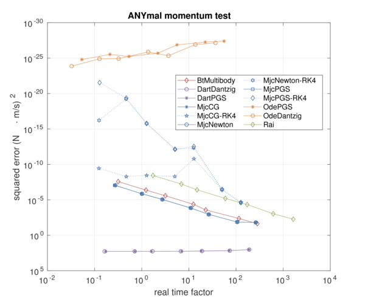
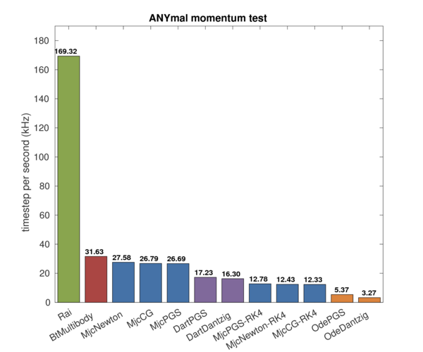

The linear momentum of the system is preserved in frictionless collision between rigid body objects. While the preservability is apparent for single-body objects but it is not clear for multibody systems with minimal coordinate representation.
The test focuses on:
The results of the test are as following figures.
 While it is very expensive to simulate articulated system in ODE, it has superiority in accuracy due to its maximal coordinate representation; as it can clearly simulate action-reaction force in exact manner, the momentum of the system preserves.
MuJoCo's Runge-Kutta 4th order integration also has good momentum preservability although it cannot fully applied for discontinuity caused by contacts.
In the meanwhile, RaiSim is incomparably faster for this test thanks to its efficient multibody dynamics implementation.